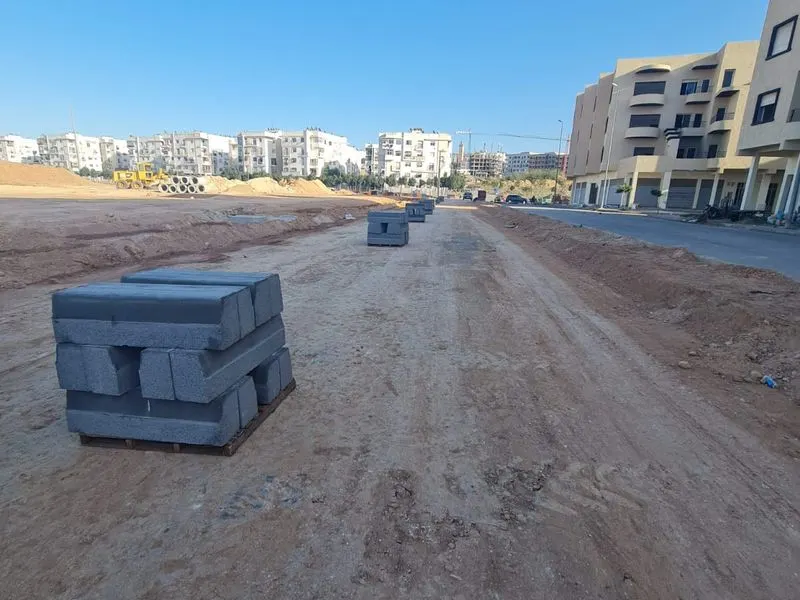

Électricité Générale Maroc — BT, HTA & Éclairage
Câblage basse tension, réseaux haute tension d'abonné, tableaux électriques, éclairage public et réseaux souterrains — WAHID EASY TRAVAUX réalise vos installations électriques à Casablanca et dans tout le Maroc.

Votre expert en électricité BTP au Maroc
WAHID EASY TRAVAUX réalise l'ensemble des travaux d'électricité générale au Maroc pour les secteurs résidentiel, commercial, industriel et public. Nos électriciens qualifiés interviennent sur tous types d'installations électriques, des simples branchements aux réseaux HTA complexes.
Basée à Casablanca, notre équipe électricité intervient dans tout le Maroc : Rabat, Tanger, Marrakech, Agadir et toutes les grandes villes. Nous travaillons en étroite coordination avec nos équipes VRD pour une intégration parfaite des réseaux électriques dans vos chantiers.
Travaux d'électricité — Prestations complètes au Maroc
Les travaux d'électricité générale au Maroc sont au cœur de tout projet de construction ou de réhabilitation. WAHID EASY TRAVAUX dispose d'une équipe d'électriciens certifiés, capables d'intervenir sur des installations de toute envergure — du simple câblage résidentiel aux réseaux HTA pour zones industrielles. Nous réalisons l'ensemble de vos travaux électriques à Casablanca et dans tout le Maroc, dans le strict respect des normes marocaines NM et des prescriptions de l'ONEE.
Électricité basse tension (BT) au Maroc
Câblage et installation électrique résidentielle
Nous réalisons l'installation électrique complète pour les villas, appartements, immeubles résidentiels et copropriétés à Casablanca et dans tout le Maroc. Chaque installation est réalisée conformément aux normes marocaines en vigueur et fait l'objet d'un contrôle de conformité avant mise en service.
- Câblage électrique complet des logements et bâtiments
- Installation de tableaux électriques divisionnaires et principaux
- Pose de prises, interrupteurs et luminaires
- Mise à la terre et protection différentielle
- Installation de systèmes de protection parafoudre
- Câblage des cuisines, salles de bain et espaces techniques
Électricité tertiaire et commerciale
Pour les bureaux, commerces, hôtels et centres commerciaux au Maroc, nous réalisons des installations électriques tertiaires adaptées aux besoins spécifiques : forte puissance, continuité de service, gestion technique du bâtiment (GTB) et systèmes d'éclairage intelligents.
- Distribution électrique pour bureaux et open spaces
- Installations électriques pour grandes surfaces commerciales
- Systèmes d'alimentation sans interruption (ASI/UPS)
- Câblage informatique et courants faibles
- Systèmes de contrôle d'accès et vidéosurveillance
- Installations pour groupes électrogènes de secours
Électricité industrielle Casablanca
Les installations électriques industrielles requièrent une expertise spécifique. WAHID EASY TRAVAUX réalise des installations pour usines, entrepôts, zones industrielles et unités de production à Casablanca (zone industrielle Ain Sebaa, Sidi Bernoussi, Nouaceur) et dans tout le Maroc.
- Distribution électrique BT pour ateliers et usines
- Câblage de machines et équipements industriels
- Armoires électriques et coffrets de distribution
- Systèmes de compensation d'énergie réactive
- Câblage de ponts roulants et équipements lourds
- Mise en conformité électrique d'installations existantes
Réseaux haute tension d'abonné (HTA) au Maroc
Postes de transformation HTA/BT
Pour les projets nécessitant une puissance élevée, WAHID EASY TRAVAUX réalise les postes de transformation HTA/BT permettant le raccordement au réseau ONEE moyenne tension. Nous gérons l'ensemble du projet : études, fourniture des équipements, installation et mise en service.
- Postes de transformation sur socle (PSS) et cabine préfabriquée
- Transformateurs HTA/BT de 100 kVA à 1000 kVA
- Cellules HTA et appareillages de coupure
- Liaisons HTA souterraines et aériennes
- Coordination avec l'ONEE pour le raccordement
Réseaux HTA souterrains
Dans le cadre des projets de VRD et voirie au Maroc, nous posons les câbles HTA souterrains en coordination avec nos équipes de terrassement. La pose s'effectue en tranchée selon les normes de l'ONEE, avec fourreaux de protection et balisage approprié.
Éclairage public et extérieur au Maroc
Éclairage public — Voiries et espaces urbains
L'éclairage public est une composante essentielle des projets de voirie et VRD. WAHID EASY TRAVAUX installe et réhabilite les réseaux d'éclairage public pour les communes, collectivités et promoteurs immobiliers à Casablanca et dans tout le Maroc.
- Installation de mâts et candélabres d'éclairage
- Pose de câbles d'alimentation souterrains
- Armoires de commande et de protection
- Systèmes de télécommande et de gestion de l'éclairage
- Éclairage LED économique et écologique
- Réhabilitation et modernisation des réseaux existants
Éclairage de chantiers et zones industrielles
Pour les zones industrielles, entrepôts, parkings et espaces extérieurs, nous réalisons des installations d'éclairage extérieur haute performance garantissant sécurité et visibilité optimales. Nous préconisons des solutions LED pour réduire la consommation énergétique et les coûts de maintenance.
Réseaux électriques souterrains pour VRD
Dans le cadre de nos travaux VRD au Maroc, nous assurons la pose complète des réseaux électriques souterrains : fourreaux, câbles BT et HTA, regards de tirage et boîtes de jonction. La coordination entre nos équipes VRD et électricité garantit une intégration parfaite et évite les reprises coûteuses.
- Pose de fourreaux électriques TPC et PEHD
- Tirage de câbles BT et HTA en tranchée
- Regards de tirage et de jonction préfabriqués
- Chambres de tirage pour réseaux HTA
- Marquage et plan de récolement des réseaux
- Coordination avec les concessionnaires (ONEE, Lydec, Redal)
Conformité et normes électriques au Maroc
Toutes nos installations électriques sont réalisées dans le strict respect des normes marocaines NM et des prescriptions techniques de l'ONEE. Nos électriciens sont formés aux dernières évolutions réglementaires et nos chantiers font l'objet d'une vérification de conformité systématique avant réception.
- NM 03.5.382 : Règles pour les installations électriques des bâtiments
- Prescriptions ONEE : Raccordement et branchements
- Norme IEC 60364 : Installations électriques basse tension
- NFC 11-201 : Réseaux de distribution publique d'énergie électrique
Nos engagements électricité au Maroc
Électriciens certifiés
Équipe d'électriciens qualifiés et certifiés, formés aux normes marocaines NM et aux prescriptions ONEE.
Conformité garantie
Toutes nos installations respectent les normes en vigueur. Certification de conformité remise à la réception.
Coordination VRD
Intégration parfaite des réseaux électriques dans vos chantiers VRD. Une seule entreprise, un seul interlocuteur.
Matériaux certifiés
Câbles, tableaux et équipements électriques certifiés NM. Fournisseurs agréés pour garantir durabilité et sécurité.
Prix compétitifs
Devis détaillé et transparent. Tarifs compétitifs sur le marché marocain, sans compromis sur la qualité d'exécution.
Intervention nationale
Casablanca, Rabat, Tanger, Marrakech, Agadir — notre équipe électricité intervient dans tout le Maroc.
Déroulement d'un chantier électricité
Étude & conception
Analyse des besoins, dimensionnement de l'installation et conception des schémas électriques.
Devis détaillé
Proposition chiffrée complète : matériaux, main-d'œuvre, délais et garanties — sous 24h.
Coordination chantier
Planification avec les autres corps de métier pour une intégration optimale des réseaux électriques.
Pose réseaux
Tirage des câbles, pose des fourreaux et installation des équipements selon les plans validés.
Raccordement & tests
Raccordement des tableaux et équipements, tests de continuité et mesures de terre.
Réception & conformité
Vérification de conformité, remise du certificat et des plans de récolement de l'installation.
Électricité dans tout le Maroc
WAHID EASY TRAVAUX intervient pour vos travaux d'électricité générale à Casablanca et dans toutes les grandes villes du Maroc. Notre équipe se déplace partout pour réaliser vos installations BT et HTA.
FAQ — Électricité Générale Maroc
WAHID EASY TRAVAUX réalise tous les travaux d'électricité générale au Maroc : câblage basse tension (BT), réseaux haute tension d'abonné (HTA), tableaux électriques, éclairage public et extérieur, réseaux souterrains VRD et installations industrielles. Nous intervenons aussi bien pour des projets résidentiels que commerciaux ou industriels à Casablanca et dans tout le Maroc.
Oui, nous réalisons l'installation, la réhabilitation et la maintenance des réseaux d'éclairage public pour les communes, collectivités et promoteurs immobiliers à Casablanca et dans tout le Maroc. Nous proposons des solutions LED économiques pour réduire la consommation énergétique de vos infrastructures d'éclairage.
Oui, nous réalisons les postes de transformation HTA/BT et les réseaux haute tension pour les zones industrielles, complexes commerciaux et grands projets immobiliers. Nous assurons la coordination complète avec l'ONEE pour les raccordements au réseau national. Notre équipe gère les études, la fourniture et l'installation des équipements HTA.
Absolument. La pose de réseaux électriques souterrains est une composante majeure de nos travaux VRD au Maroc. Nous posons les fourreaux TPC et PEHD, tirons les câbles BT et HTA, installons les regards de tirage et assurons la coordination avec les concessionnaires (ONEE, Lydec, Redal). L'avantage de travailler avec WAHID EASY TRAVAUX, c'est d'avoir une seule entreprise pour toutes les prestations VRD.
Oui, toutes nos installations électriques font l'objet d'une vérification de conformité selon les normes NM marocaines. Nous remettons à nos clients un certificat de conformité ainsi que les plans de récolement de l'installation électrique à la fin des travaux. Ces documents sont indispensables pour le raccordement ONEE et les démarches administratives.